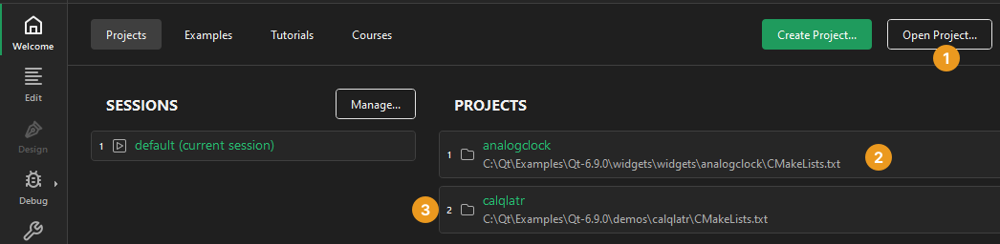
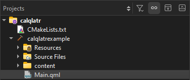
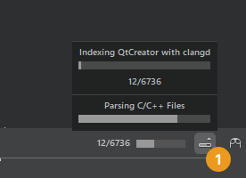

Open projects
To open a project, open the configuration file for the project: CMakeLists.txt or CMakeCache.txt (CMake), .pro (qmake), .qbs (Qbs), meson.build (Meson), pyproject.toml (Python), or Makefile.am (Autotools, experimental).
You can open a project in the following ways:
- Select File > Open File or Project.
- In the Welcome mode, Projects tab, select Open Project (1).

- In the Projects tab, select a project in the list of recently opened projects (2).
- In the Welcome mode, Overview tab, select a recently opened project in Recent Projects.
- In the Projects view, right-click to open a context menu and select Load Project to open the Open Project dialog, where you can select a project file.

- Use the following keyboard shortcuts, depending on the mode you are currently in:
- In all modes, select Ctrl+O (Cmd+O on macOS) to open the Open File dialog, where you can select a project file.
- On Windows and Linux, in all modes except the Help mode, select Ctrl+Shift+O to open the Open Project dialog, where you can select a project file.
- In the Welcome mode, Projects tab, select Ctrl+Shift+number (Cmd+Shift+number on macOS), where the number is the number of a project in the list of recently opened projects (3).
Open directories as projects
To open a directory as a project, go to File > Open Workspace.
Qt Creator uses the default kit to automatically add a build configuration for the workspace. It generates the .qtcreator/project.json project file in the directory for setting a project name and file exclusion filters. You can add build and run settings to the file, as defined by its JSON schema.
You can open either the JSON file or the workspace to open the project the next time.
Also, you can open Cargo build projects when developing Rust packages.
When you add files to the directory or remove them from there, the contents of the Projects view are updated automatically.
To add build configurations to the workspace:
- Go to Projects > Build Settings.
- Select Add > Build.
- Specify build settings.
To specify deploy settings for the workspace, go to Projects > Deploy Settings.
To specify run settings for the workspace, go to Projects > Run Settings.
Re-configure projects
Qt Creator stores information that it needs to build projects in a .user file. If Qt Creator cannot find the file when you open an existing project, it prompts you to enter the information.
If you used another Qt Creator instance to create the project, Qt Creator asks whether you want to use the old settings. The settings are specific to the development environment, and you should not copy them from one environment to another. Therefore, we recommend that you select No and enter the information again in the Configure Project tab.
To re-configure projects:
- In Configure Project, select kits for building and running your project.

- For each kit, select the build configurations to create for the project.
- Select Configure Project.
Configure Project shows a list of kits that you install on the computer and configure in Preferences > Kits.
Even if you do not intend to build the project, the C++ and QML code models need a Qt version and compiler to offer code completion. To specify them, select the Preferences link, or select Preferences > Kits.
Qt for Python projects rely on the language server client for code completion, highlighting, and other useful features.
If Qt Creator cannot find an existing build for a particular kit, it starts out from a clean slate and creates new debug and release build configurations in the specified directory. Qt Creator suggests a name and location for the directory that you can change.
Import builds
If you have built the project before, Qt Creator can use the existing build configuration to make the exact same build available to you. To import a build, specify a directory in the Import Build From section of the Configure Project tab and select Import.
You can edit the build configuration later. For more information, see Edit build configurations.
Show progress information
Qt Creator parses all the source files in the project and performs a semantic analysis to build up the information that it needs for functions such as navigation and finding usages. A progress bar is displayed during parsing.
To show or hide detailed progress information, select Toggle Progress Details (1).

You can drag the progress bar to another position. The position is saved for later. Select (Pin) to pin the progress bar back to the toggle button.
See also Configure projects for building, Configure projects for running, How To: Manage Kits, and Kits.